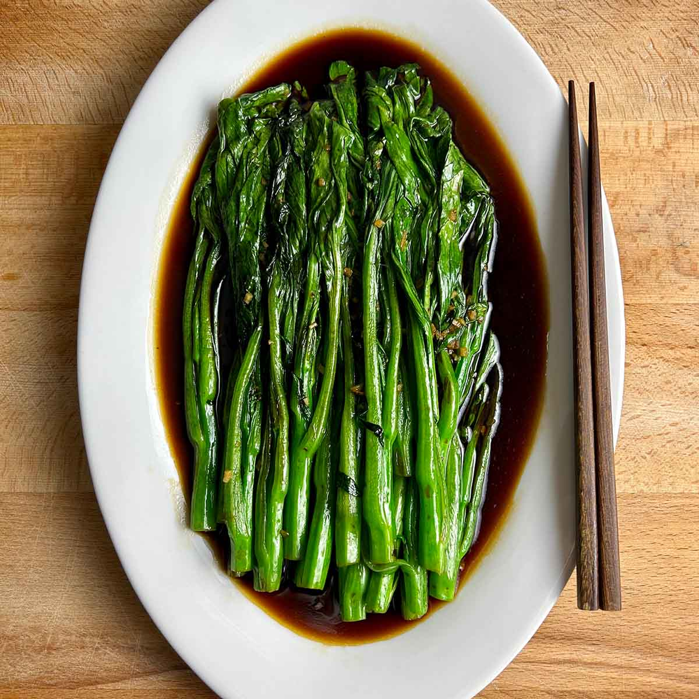

Blanched Yu Choy

Blanching greens like Yu Choy or Bok Choy is another fast and easy way to cook
you favorite greens. Especially if you are cooking multiple things at once.
In the recipe we will be blanching Yu Choy and adding some umami flavor to keep make it delicious.
s always feel free to follow this recipe using any leafy green you enjoy.
Ingredients
Steps
- Wash greens
Wash the yu choy under cold water.
There is no need to separate the leaves, unless you want to, since yu choy is small.
- Blanching
Add 2-3 tbsp oil and a pinch of salt to boiling water.
Add the yu choy to the boiling water and allow to cook until the stem becomes tender. (2-4 minutes)
- Drain
Drain the water using a colander.
- Season
Add 1-2 tbsp oyster sauce.
Add salt to taste and mix to even coat everything.
Taste and adjut to your preferences.
Enjoy!
Home